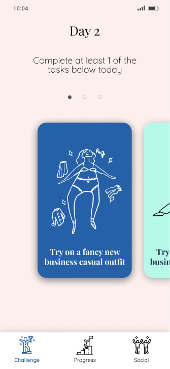
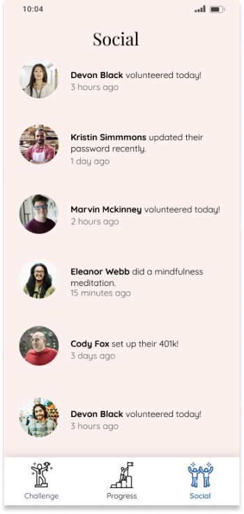
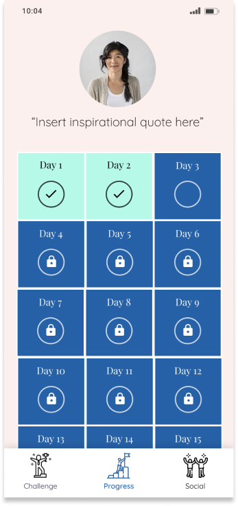

Despite cyberattacks becoming more sophisticated and frequent, adoption of good cybersecurity habits is severely lagging behind. Google reports less than 10% of people use 2-factor authentication despite it being recommended as best practice.
The Social Cybersecurity team wanted to get new ideas on how they could tackle this social issue. We met their challenge by designing an "adulting" challenge in the form of a mobile app.
timeline
10 weeks,
October - December 2019
my role
UX Designer, Motion Designer, Visual Designer
team
Eunice Choe, Dana Frostig, Irene Lin, Megan Parisi, Gautham Sajith
We created a mobile app that intermixes cybersecurity with other tasks that are considered good “adulting” practices. Each day focuses on one "adulting" topic. While some days may focus on cybersecurity, we intermix in other topics such as cleaning, style, nutrition, finance, and more.
Intermixing
Mixing content with other topics makes the true persuasive intentions less obvious (and more effective)
Theory of Planned Behavior
One’s intentions, social norms, and how easy the behavior seems are predictors of behavioral
Social Proof
People often act as they others do (particularly if they are unsure of what to do)
The task card can be clicked to see a more detailed description and mark it as complete. At least 1 of the 3 tasks needs to be completed in order to progress in the challenge.
The Room page starts off as empty at the start of the challenge, and slowly becomes more built out with each task. The motivation to update and build out this space will encourage people to make changes in real life by completing the challenge’s tasks.

On the Profile page, all the tasks completed can be referenced and viewed. The achievements here more directly show the accomplishments made in the app.
-Cori Faklaris, Researcher on the Social Cybersecurity team
We've shared our prototype with the Social Cybersecurity team and received very positive feedback so far. We'll be discussing our next steps with them over the summer.
1. Literature Review
2. Ideation
3. Competitive Analysis
4. Prototyping + User Testing
5. Refining

We read 15 research papers on cybersecurity and persuasive techniques. Through these readings, we found that the majority of existing research focuses on risk communication and eductating the public on best practices. This showed us that there’s a lack of actually transforming people’s behavior after they understand best practices.
01
Increase adoption of good cybersecurity practices
02
Create a novel idea to inspire new research
03
Speak to an audience of non-cybersecurity experts
We were recommended the game Pretending to Grownup where the cards each have serious tasks (like “Do your taxes”) paired with funny and cute illustrations. The game showed us that whimsical illustrations helps make serious content enjoyable.
We were recommended the game Pretending to Grownup where the cards each have serious tasks (like “Do your taxes”) paired with funny and cute illustrations. The game showed us that whimsical illustrations helps make serious content enjoyable.
These three screens are examples of possible home screen designs we made quick digital sketches of-- one shows a carousel of tasks, one shows 3 tasks at once, and the other shows just one task for the day. We got some quick feedback through user tests to narrow down on the first carousel design.
We tried out this playful color palette for mid-fidelity design to channel the whimsy we liked in our competitive analysis, and also to create a more approachable app for young adults. The design features the home page with tasks, a progress page for the challenge, and a social page to motivate users with social proof.
After reflecting on feedback for the mid-fidelity prototype, we revisited our target demographic. We created a stylescape where we collaged different elements that young adults in the self- development space would be interested in. From there, we decided to pursue a more minimalistic aesthetic with some pops of color.
The new home page shows the tasks cards in black and white. On completion, the illustration changes and gets filled in. This adds a visual reward for completing the task.
Mid-Fi

Hi-Fi
The original social page had an endless scroll of friends completing tasks. While social proof can help motivate people, it can also de-motivate people if others drop out of the challenge. The new room page instead visualizes the long-term progress being made by adding new objects with every task completed.
Mid-Fi

Hi-Fi
The new profile page shows progress without scrolling, and shows acheivements without having to click into the individual days. This new design displays the accomplishments made with every task completion at the forefront.
Mid-Fi

Hi-Fi
Through this project, I learned to make every design decision with intention. Though I liked the fun color blocking style of the original design, it didn’t quite make sense for our target demographic. From the color palette to the typography, each detail has now been made with a conscious decision.